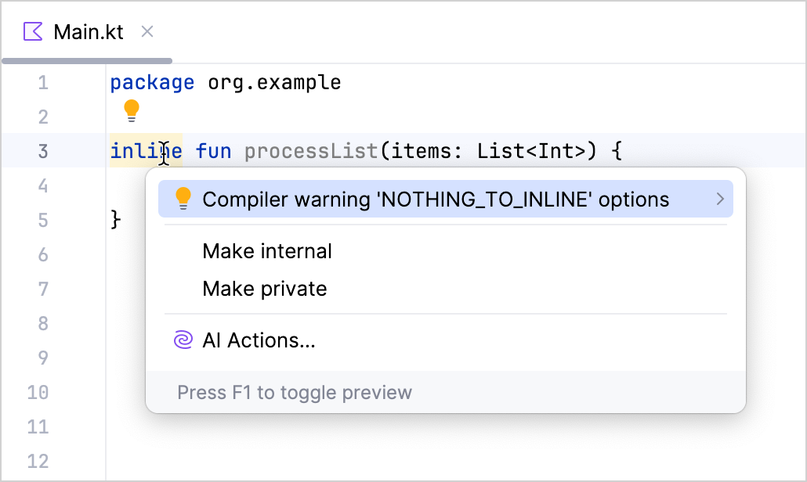
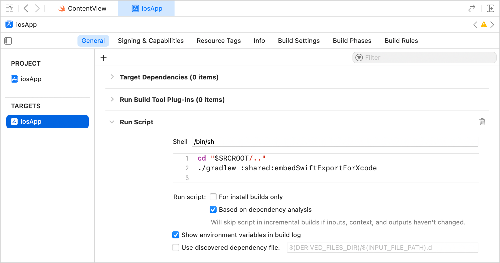
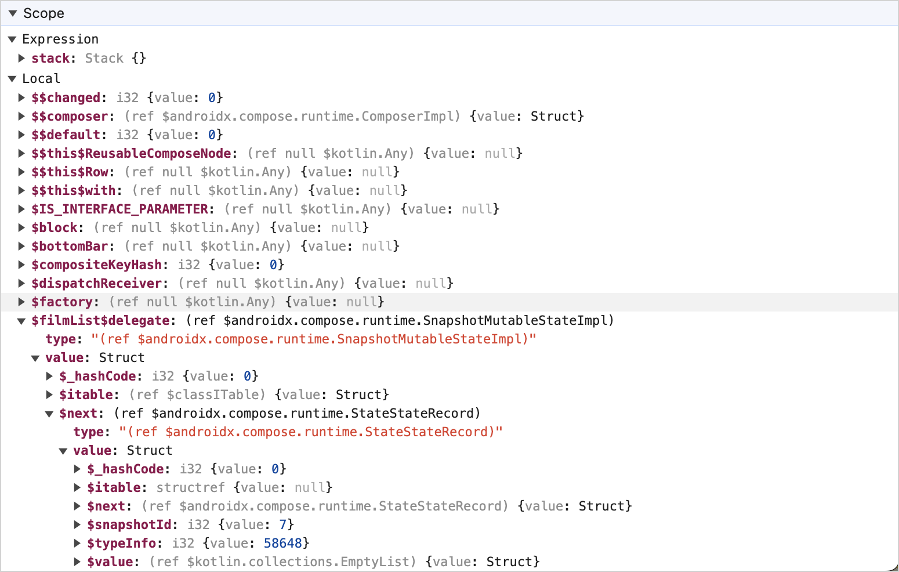

Kotlin 2.1.0 的新特性
The Kotlin 2.1.0 release is here! Here are the main highlights:
- New language features in preview: Guard conditions in
whenwith a subject, non-localbreakandcontinue, and multi-dollar string interpolation. - K2 compiler updates: More flexibility around compiler checks and improvements to the kapt implementation.
- Kotlin Multiplatform: Introduced basic support for Swift export, stable Gradle DSL for compiler options, and more.
- Kotlin/Native: Improved support for
iosArm64and other updates. - Kotlin/Wasm: Multiple updates, including support for incremental compilation.
- Gradle support: Improved compatibility with newer versions of Gradle and the Android Gradle plugin, along with updates to the Kotlin Gradle plugin API.
- Documentation: Significant improvements to the Kotlin documentation.
IDE support
The Kotlin plugins that support 2.1.0 are bundled in the latest IntelliJ IDEA and Android Studio. You don't need to update the Kotlin plugin in your IDE. All you need to do is change the Kotlin version to 2.1.0 in your build scripts.
See Update to a new Kotlin version for details.
Language
After the Kotlin 2.0.0 release with the K2 compiler, the JetBrains team is focusing on improving the language with new features. In this release, we are excited to announce several new language design improvements.
These features are available in preview, and we encourage you to try them and share your feedback:
- Guard conditions in
whenwith a subject - Non-local
breakandcontinue - Multi-dollar interpolation: improved handling of
$in string literals
All the features have IDE support in the latest 2024.3 version of IntelliJ IDEA with K2 mode enabled.
Learn more in the IntelliJ IDEA 2024.3 blog post.
See the full list of Kotlin language design features and proposals.
This release also brings the following language updates:
Guard conditions in when with a subject
This feature is In preview, and opt-in is required (see details below).
We would appreciate your feedback in YouTrack.
Starting from 2.1.0, you can use guard conditions in when expressions or statements with subjects.
Guard conditions allow you to include more than one condition for the branches of a when expression,
making complex control flows more explicit and concise as well as flattening the code structure.
To include a guard condition in a branch, place it after the primary condition, separated by if:
sealed interface Animal {
data class Cat(val mouseHunter: Boolean) : Animal {
fun feedCat() {}
}
data class Dog(val breed: String) : Animal {
fun feedDog() {}
}
}
fun feedAnimal(animal: Animal) {
when (animal) {
// Branch with only the primary condition. Calls `feedDog()` when `animal` is `Dog`
is Animal.Dog -> animal.feedDog()
// Branch with both primary and guard conditions. Calls `feedCat()` when `animal` is `Cat` and is not `mouseHunter`
is Animal.Cat if !animal.mouseHunter -> animal.feedCat()
// Prints "Unknown animal" if none of the above conditions match
else -> println("Unknown animal")
}
}
In a single when expression, you can combine branches with and without guard conditions.
The code in a branch with a guard condition runs only if both the primary condition and the guard condition are true.
If the primary condition does not match, the guard condition is not evaluated.
Additionally, guard conditions support else if.
To enable guard conditions in your project, use the following compiler option in the command line:
kotlinc -Xwhen-guards main.kt
Or add it to the compilerOptions {} block of your Gradle build file:
// build.gradle.kts
kotlin {
compilerOptions {
freeCompilerArgs.add("-Xwhen-guards")
}
}
Non-local break and continue
This feature is In preview, and opt-in is required (see details below).
We would appreciate your feedback in YouTrack.
Kotlin 2.1.0 adds a preview of another long-awaited feature, the ability to use non-local break and continue.
This feature expands the toolset you can use in the scope of inline functions and reduces boilerplate code in your project.
Previously, you could use only non-local returns.
Now, Kotlin also supports break and continue jump expressions non-locally.
This means that you can apply them within lambdas passed as arguments to an inline function that encloses the loop:
fun processList(elements: List<Int>): Boolean {
for (element in elements) {
val variable = element.nullableMethod() ?: run {
log.warning("Element is null or invalid, continuing...")
continue
}
if (variable == 0) return true // If variable is zero, return true
}
return false
}
To try the feature in your project, use the -Xnon-local-break-continue compiler option in the command line:
kotlinc -Xnon-local-break-continue main.kt
Or add it in the compilerOptions {} block of your Gradle build file:
// build.gradle.kts
kotlin {
compilerOptions {
freeCompilerArgs.add("-Xnon-local-break-continue")
}
}
We're planning to make this feature Stable in future Kotlin releases.
If you encounter any issues when using non-local break and continue,
please report them to our issue tracker.
Multi-dollar string interpolation
The feature is In preview and opt-in is required (see details below).
We would appreciate your feedback in YouTrack.
Kotlin 2.1.0 introduces support for multi-dollar string interpolation,
improving how the dollar sign ($) is handled within string literals.
This feature is helpful in contexts that require multiple dollar signs,
such as templating engines, JSON schemas, or other data formats.
String interpolation in Kotlin uses a single dollar sign.
However, using a literal dollar sign in a string,
which is common in financial data and templating systems, required workarounds such as ${'$'}.
With the multi-dollar interpolation feature enabled, you can configure how many dollar signs trigger interpolation,
with fewer dollar signs being treated as string literals.
Here's an example of how to generate an JSON schema multi-line string with placeholders using $:
val KClass<*>.jsonSchema : String
get() = $$"""
{
"$schema": "https://json-schema.org/draft/2020-12/schema",
"$id": "https://example.com/product.schema.json",
"$dynamicAnchor": "meta"
"title": "$${simpleName ?: qualifiedName ?: "unknown"}",
"type": "object"
}
"""
In this example, the initial $$ means that you need two dollar signs ($$) to trigger interpolation.
It prevents $schema, $id, and $dynamicAnchor from being interpreted as interpolation markers.
This approach is especially helpful when working with systems that use dollar signs for placeholder syntax.
To enable the feature, use the following compiler option in the command line:
kotlinc -Xmulti-dollar-interpolation main.kt
Alternatively, update the compilerOptions {} block of your Gradle build file:
// build.gradle.kts
kotlin {
compilerOptions {
freeCompilerArgs.add("-Xmulti-dollar-interpolation")
}
}
If your code already uses standard string interpolation with a single dollar sign, no changes are needed.
You can use $$ whenever you need literal dollar signs in your strings.
Support for requiring opt-in to extend APIs
Kotlin 2.1.0 introduces the @SubclassOptInRequired annotation,
which allows library authors to require an explicit opt-in before users can implement experimental interfaces or extend experimental classes.
This feature can be useful when a library API is stable enough to use but might evolve with new abstract functions, making it unstable for inheritance.
To add the opt-in requirement to an API element, use the @SubclassOptInRequired
annotation with a reference to the annotation class:
@RequiresOptIn(
level = RequiresOptIn.Level.WARNING,
message = "Interfaces in this library are experimental"
)
annotation class UnstableApi()
@SubclassOptInRequired(UnstableApi::class)
interface CoreLibraryApi
In this example, the CoreLibraryApi interface requires users to opt in before they can implement it.
A user can opt in like this:
@OptIn(UnstableApi::class)
interface MyImplementation: CoreLibraryApi
When you use the
@SubclassOptInRequiredannotation to require opt-in, the requirement is not propagated to any inner or nested classes.
For a real-world example of how to use the @SubclassOptInRequired annotation in your API,
check out the SharedFlow
interface in the kotlinx.coroutines library.
Improved overload resolution for functions with generic types
Previously, if you had a number of overloads for a function where some had value parameters of a generic type and others had function types in the same position, the resolution behavior could sometimes be inconsistent.
This led to different behavior depending on whether your overloads were member functions or extension functions. For example:
class KeyValueStore<K, V> {
fun store(key: K, value: V) {} // 1
fun store(key: K, lazyValue: () -> V) {} // 2
}
fun <K, V> KeyValueStore<K, V>.storeExtension(key: K, value: V) {} // 1
fun <K, V> KeyValueStore<K, V>.storeExtension(key: K, lazyValue: () -> V) {} // 2
fun test(kvs: KeyValueStore<String, Int>) {
// Member functions
kvs.store("", 1) // Resolves to 1
kvs.store("") { 1 } // Resolves to 2
// Extension functions
kvs.storeExtension("", 1) // Resolves to 1
kvs.storeExtension("") { 1 } // Doesn't resolve
}
In this example, the KeyValueStore class has two overloads for the store() function,
where one overload has function parameters with generic types K and V,
and another has a lambda function that returns a generic type V.
Similarly, there are two overloads for the extension function: storeExtension().
When the store() function was called with and without a lambda function,
the compiler successfully resolved the correct overloads.
However, when the extension function storeExtension() was called with a lambda function,
the compiler didn't resolve the correct overload because it incorrectly considered both overloads to be applicable.
To fix this problem, we've introduced a new heuristic so that the compiler can discard a possible overload when a function parameter with a generic type can't accept a lambda function based on information from a different argument. This change makes the behavior of member functions and extension functions consistent, and it is enabled by default in Kotlin 2.1.0.
Improved exhaustiveness checks for when expressions with sealed classes
In previous versions of Kotlin, the compiler required an else branch in when
expressions for type parameters with sealed upper bounds, even when all cases in the sealed class hierarchy were covered.
This behavior is addressed and improved in Kotlin 2.1.0,
making exhaustiveness checks more powerful and allowing you to remove redundant else branches,
keeping when expressions cleaner and more intuitive.
Here's an example demonstrating the change:
sealed class Result
object Error: Result()
class Success(val value: String): Result()
fun <T : Result> render(result: T) = when (result) {
Error -> "Error!"
is Success -> result.value
// Requires no else branch
}
Kotlin K2 compiler
With Kotlin 2.1.0, the K2 compiler now provides more flexibility when working with compiler checks and warnings, as well as improved support for the kapt plugin.
Extra compiler checks
With Kotlin 2.1.0, you can now enable additional checks in the K2 compiler. These are extra declaration, expression, and type checks that are usually not crucial for compilation but can still be useful if you want to validate the following cases:
| Check type | Comment |
|---|---|
REDUNDANT_NULLABLE |
Boolean?? is used instead of Boolean? |
PLATFORM_CLASS_MAPPED_TO_KOTLIN |
java.lang.String is used instead of kotlin.String |
ARRAY_EQUALITY_OPERATOR_CAN_BE_REPLACED_WITH_EQUALS |
arrayOf("") == arrayOf("") is used instead of arrayOf("").contentEquals(arrayOf("")) |
REDUNDANT_CALL_OF_CONVERSION_METHOD |
42.toInt() is used instead of 42 |
USELESS_CALL_ON_NOT_NULL |
"".orEmpty() is used instead of "" |
REDUNDANT_SINGLE_EXPRESSION_STRING_TEMPLATE |
"$string" is used instead of string |
UNUSED_ANONYMOUS_PARAMETER |
A parameter is passed in the lambda expression but never used |
REDUNDANT_VISIBILITY_MODIFIER |
public class Klass is used instead of class Klass |
REDUNDANT_MODALITY_MODIFIER |
final class Klass is used instead of class Klass |
REDUNDANT_SETTER_PARAMETER_TYPE |
set(value: Int) is used instead of set(value) |
CAN_BE_VAL |
var local = 0 is defined but never reassigned, can be val local = 42 instead |
ASSIGNED_VALUE_IS_NEVER_READ |
val local = 42 is defined but never used afterward in the code |
UNUSED_VARIABLE |
val local = 0 is defined but never used in the code |
REDUNDANT_RETURN_UNIT_TYPE |
fun foo(): Unit {} is used instead of fun foo() {} |
UNREACHABLE_CODE |
Code statement is present but can never be executed |
If the check is true, you'll receive a compiler warning with a suggestion on how to fix the problem.
Extra checks are disabled by default.
To enable them, use the -Wextra compiler option in the command line or specify extraWarnings
in the compilerOptions {} block of your Gradle build file:
// build.gradle.kts
kotlin {
compilerOptions {
extraWarnings.set(true)
}
}
For more information on how to define and use compiler options, see Compiler options in the Kotlin Gradle plugin.
Global warning suppression
In 2.1.0, the Kotlin compiler has received a highly requested feature – the ability to suppress warnings globally.
You can now suppress specific warnings in the whole project by using the -Xsuppress-warning=WARNING_NAME
syntax in the command line or the freeCompilerArgs attribute in the compilerOptions {} block of your build file.
For example, if you have extra compiler checks enabled in your project but want to suppress one of them, use:
// build.gradle.kts
kotlin {
compilerOptions {
extraWarnings.set(true)
freeCompilerArgs.add("-Xsuppress-warning=CAN_BE_VAL")
}
}
If you want to suppress a warning but don't know its name, select the element and click the light bulb icon (or use

The new compiler option is currently Experimental. The following details are also worth noting:
- Error suppression is not allowed.
- If you pass an unknown warning name, compilation will result in an error.
- You can specify several warnings at once:
【Command line】
kotlinc -Xsuppress-warning=NOTHING_TO_INLINE -Xsuppress-warning=NO_TAIL_CALLS_FOUND main.kt
【Build file】
// build.gradle.kts
kotlin {
compilerOptions {
freeCompilerArgs.addAll(
listOf(
"-Xsuppress-warning=NOTHING_TO_INLINE",
"-Xsuppress-warning=NO_TAIL_CALLS_FOUND"
)
)
}
}
Improved K2 kapt implementation
The kapt plugin for the K2 compiler (K2 kapt) is in Alpha. It may be changed at any time.
We would appreciate your feedback in YouTrack.
Currently, projects using the kapt plugin work with the K1 compiler by default, supporting Kotlin versions up to 1.9.
In Kotlin 1.9.20, we launched an experimental implementation of the kapt plugin with the K2 compiler (K2 kapt). We have now improved K2 kapt's internal implementation to mitigate technical and performance issues.
While the new K2 kapt implementation doesn't introduce new features, its performance has significantly improved compared to the previous K2 kapt implementation. Additionally, the K2 kapt plugin's behavior is now much closer to that of K1 kapt.
To use the new K2 kapt plugin implementation, enable it just like you did the previous K2 kapt plugin.
Add the following option to the gradle.properties file of your project:
kapt.use.k2=true
In upcoming releases, the K2 kapt implementation will be enabled by default instead of K1 kapt, so you will no longer need to enable it manually.
We highly appreciate your feedback before the new implementation is stabilized.
Resolution for overload conflicts between unsigned and non-primitive types
This release addresses the issue of resolution for overload conflicts that could occur in previous versions when functions were overloaded for unsigned and non-primitive types, as in the following examples:
Overloaded extension functions
fun Any.doStuff() = "Any"
fun UByte.doStuff() = "UByte"
fun main() {
val uByte: UByte = UByte.MIN_VALUE
uByte.doStuff() // Overload resolution ambiguity before Kotlin 2.1.0
}
In earlier versions, calling uByte.doStuff() led to ambiguity because both the Any and UByte extensions were applicable.
Overloaded top-level functions
fun doStuff(value: Any) = "Any"
fun doStuff(value: UByte) = "UByte"
fun main() {
val uByte: UByte = UByte.MIN_VALUE
doStuff(uByte) // Overload resolution ambiguity before Kotlin 2.1.0
}
Similarly, the call to doStuff(uByte) was ambiguous because the compiler couldn't decide whether to use the Any or UByte version.
With 2.1.0, the compiler now handles these cases correctly, resolving the ambiguity by giving precedence to the more specific type,
in this case UByte.
Kotlin/JVM
Starting with version 2.1.0, the compiler can generate classes containing Java 23 bytecode.
Change of JSpecify nullability mismatch diagnostics severity to strict
Kotlin 2.1.0 enforces strict handling of nullability annotations from org.jspecify.annotations,
improving type safety for Java interoperability.
The following nullability annotations are affected:
org.jspecify.annotations.Nullableorg.jspecify.annotations.NonNullorg.jspecify.annotations.NullMarked- Legacy annotations in
org.jspecify.nullness(JSpecify 0.2 and earlier)
Starting from Kotlin 2.1.0, nullability mismatches are raised from warnings to errors by default.
This ensures that annotations like @NonNull and @Nullable are enforced during type checks,
preventing unexpected nullability issues at runtime.
The @NullMarked annotation also affects the nullability of all members within its scope,
making the behavior more predictable when you're working with annotated Java code.
Here's an example demonstrating the new default behavior:
// Java
import org.jspecify.annotations.*;
public class SomeJavaClass {
@NonNull
public String foo() { //...
}
@Nullable
public String bar() { //...
}
}
// Kotlin
fun test(sjc: SomeJavaClass) {
// Accesses a non-null result, which is allowed
sjc.foo().length
// Raises an error in the default strict mode because the result is nullable
// To avoid the error, use ?.length instead
sjc.bar().length
}
You can manually control the severity of diagnostics for these annotations.
To do so, use the -Xnullability-annotations compiler option to choose a mode:
ignore: Ignore nullability mismatches.warning: Report warnings for nullability mismatches.strict: Report errors for nullability mismatches (default mode).
For more information, see Nullability annotations.
Kotlin Multiplatform
Kotlin 2.1.0 introduces basic support for Swift export and makes publishing Kotlin Multiplatform libraries easier. It also focuses on improvements around Gradle that stabilize the new DSL for configuring compiler options and bring a preview of the Isolated Projects feature.
New Gradle DSL for compiler options in multiplatform projects promoted to Stable
In Kotlin 2.0.0, we introduced a new Experimental Gradle DSL to simplify the configuration of compiler options across your multiplatform projects. In Kotlin 2.1.0, this DSL has been promoted to Stable.
The overall project configuration now has three layers. The highest is the extension level, then the target level, and the lowest is the compilation unit (which is usually a compilation task):

To learn more about the different levels and how compiler options can be configured between them, see Compiler options.
Preview Gradle's Isolated Projects in Kotlin Multiplatform
This feature is Experimental and is currently in a pre-Alpha state in Gradle. Use it only with Gradle version 8.10 and solely for evaluation purposes. The feature may be dropped or changed at any time.
We would appreciate your feedback on it in YouTrack. Opt-in is required (see details below).
In Kotlin 2.1.0, you can preview Gradle's Isolated Projects feature in your multiplatform projects.
The Isolated Projects feature in Gradle improves build performance by "isolating" configuration of individual Gradle projects from each other. Each project's build logic is restricted from directly accessing the mutable state of other projects, allowing them to safely run in parallel. To support this feature, we made some changes to the Kotlin Gradle plugin's model, and we are interested in hearing about your experiences during this preview phase.
There are two ways to enable the Kotlin Gradle plugin's new model:
Option 1: Testing compatibility without enabling Isolated Projects – To check compatibility with the Kotlin Gradle plugin's new model without enabling the Isolated Projects feature, add the following Gradle property in the
gradle.propertiesfile of your project:# gradle.properties kotlin.kmp.isolated-projects.support=enableOption 2: Testing with Isolated Projects enabled – Enabling the Isolated Projects feature in Gradle automatically configures the Kotlin Gradle plugin to use the new model. To enable the Isolated Projects feature, set the system property. In this case, you don't need to add the Gradle property for the Kotlin Gradle plugin to your project.
Basic support for Swift export
This feature is currently in the early stages of development. It may be dropped or changed at any time. Opt-in is required (see the details below), and you should use it only for evaluation purposes. We would appreciate your feedback on it in YouTrack.
Version 2.1.0 takes the first step towards providing support for Swift export in Kotlin, allowing you to export Kotlin sources directly to the Swift interface without using Objective-C headers. This should make multiplatform development for Apple targets easier.
The current basic support includes the ability to:
- Export multiple Gradle modules from Kotlin directly to Swift.
- Define custom Swift module names with the
moduleNameproperty. - Set collapse rules for the package structure with the
flattenPackageproperty.
You can use the following build file in your project as a starting point for setting up Swift export:
// build.gradle.kts
kotlin {
iosX64()
iosArm64()
iosSimulatorArm64()
@OptIn(ExperimentalSwiftExportDsl::class)
swiftExport {
// Root module name
moduleName = "Shared"
// Collapse rule
// Removes package prefix from generated Swift code
flattenPackage = "com.example.sandbox"
// Export external modules
export(project(":subproject")) {
// Exported module name
moduleName = "Subproject"
// Collapse exported dependency rule
flattenPackage = "com.subproject.library"
}
}
}
You can also clone our public sample with Swift export already set up.
The compiler automatically generates all the necessary files (including swiftmodule files,
static a library, and header and modulemap files) and copies them into the app's build directory,
which you can access from Xcode.
How to enable Swift export
Keep in mind that the feature is currently only in the early stages of development.
Swift export currently works in projects that use direct integration to connect the iOS framework to the Xcode project. This is a standard configuration for Kotlin Multiplatform projects created in Android Studio or through the web wizard.
To try out Swift export in your project:
Add the following Gradle option to your
gradle.propertiesfile:# gradle.properties kotlin.experimental.swift-export.enabled=trueIn Xcode, open the project settings.
- On the Build Phases tab, locate the Run Script phase with the
embedAndSignAppleFrameworkForXcodetask. Adjust the script to feature the
embedSwiftExportForXcodetask instead in the run script phase:./gradlew :<Shared module name>:embedSwiftExportForXcode
Leave feedback on Swift export
We're planning to expand and stabilize Swift export support in future Kotlin releases. Please leave your feedback in this YouTrack issue.
Ability to publish Kotlin libraries from any host
This feature is currently Experimental. Opt-in is required (see the details below), and you should use it only for evaluation purposes. We would appreciate your feedback on it in YouTrack.
The Kotlin compiler produces .klib artifacts for publishing Kotlin libraries.
Previously, you could get the necessary artifacts from any host, except for Apple platform targets that required a Mac machine.
That put a special restraint on Kotlin Multiplatform projects that targeted iOS, macOS, tvOS, and watchOS targets.
Kotlin 2.1.0 lifts this restriction, adding support for cross-compilation.
Now you can use any host to produce .klib artifacts,
which should greatly simplify the publishing process for Kotlin and Kotlin Multiplatform libraries.
How to enable publishing libraries from any host
To try cross-compilation out in your project, add the following binary option to your gradle.properties file:
# gradle.properties
kotlin.native.enableKlibsCrossCompilation=true
This feature is currently Experimental and has some limitations. You still need to use a Mac machine if:
- Your library has a cinterop dependency.
- You have CocoaPods integration set up in your project.
- You need to build or test final binaries for Apple targets.
Leave feedback on publishing libraries from any host
We're planning to stabilize this feature and further improve library publication in future Kotlin releases. Please leave your feedback in our issue tracker YouTrack.
For more information, see Publishing multiplatform libraries.
Support for non-packed klibs
Kotlin 2.1.0 makes it possible to generate non-packed .klib file artifacts.
This gives you the option to configure dependencies on klibs directly rather than unpack them first.
This change can also improve performance, decreasing compilation and linking time in your Kotlin/Wasm, Kotlin/JS, and Kotlin/Native projects.
For example, our benchmark shows a performance improvement of roughly 3% in total build time on the project with 1 linking and 10 compilation tasks (the project builds a single native executable binary that depends on 9 simplified projects). However, the actual impact on build time depends on both the number of subprojects and their respective sizes.
How to set up your project
By default, Kotlin compilation and linking tasks are now configured to use the new non-packed artifacts.
If you have set up custom build logic for resolving klibs and want to use the new unpacked artifacts, you need to explicitly specify the preferred variant of klib package resolution in your Gradle build file:
// build.gradle.kts
import org.jetbrains.kotlin.gradle.plugin.attributes.KlibPackaging
// ...
val resolvableConfiguration = configurations.resolvable("resolvable") {
// For the new non-packed configuration:
attributes.attribute(KlibPackaging.ATTRIBUTE, project.objects.named(KlibPackaging.NON_PACKED))
// For the previous packed configuration:
attributes.attribute(KlibPackaging.ATTRIBUTE, project.objects.named(KlibPackaging.PACKED))
}
Non-packed .klib files are generated at the same path in your project's build directory as the packed ones previously were.
In turn, packed klibs are now located in the build/libs directory.
If no attribute is specified, the packed variant is used. You can check the list of available attributes and variants with the following console command:
./gradlew outgoingVariants
We would appreciate your feedback on this feature in YouTrack.
Further deprecation of old android target
In Kotlin 2.1.0, the deprecation warning for the old android target name has been raised to an error.
Currently, we recommend using the androidTarget option in your Kotlin Multiplatform projects targeting Android.
This is a temporary solution that is necessary to free the android name for the upcoming Android/KMP plugin from Google.
We'll provide further migration instructions when the new plugin is available. The new DSL from Google will be the preferred option for Android target support in Kotlin Multiplatform.
For more information, see the Kotlin Multiplatform compatibility guide.
Dropped support for declaring multiple targets of the same type
Before Kotlin 2.1.0, you could declare multiple targets of the same type in your multiplatform projects. However, this made it challenging to distinguish between targets and to support shared source sets effectively. In most cases, a simpler setup, such as using separate Gradle projects, works better. For detailed guidance and an example of how to migrate, see Declaring several similar targets in the Kotlin Multiplatform compatibility guide.
Kotlin 1.9.20 triggered a deprecation warning if you declared multiple targets of the same type in your multiplatform projects. In Kotlin 2.1.0, this deprecation warning is now an error for all targets except Kotlin/JS ones. To learn more about why Kotlin/JS targets are exempt, see this issue in YouTrack.
Kotlin/Native
Kotlin 2.1.0 includes an upgrade for the iosArm64 target support,
improved cinterop caching process, and other updates.
iosArm64 promoted to Tier 1
The iosArm64 target, which is crucial for Kotlin Multiplatform development,
has been promoted to Tier 1. This is the highest level of support in the Kotlin/Native compiler.
This means the target is regularly tested on the CI pipeline to ensure that it's able to compile and run. We also provide source and binary compatibility between compiler releases for the target.
For more information on target tiers, see Kotlin/Native target support.
LLVM update from 11.1.0 to 16.0.0
In Kotlin 2.1.0, we updated LLVM from version 11.1.0 to 16.0.0. The new version includes bug fixes and security updates. In certain cases, it also provides compiler optimizations and faster compilation.
If you have Linux targets in your project,
take note that the Kotlin/Native compiler now uses the lld linker by default for all Linux targets.
This update shouldn't affect your code, but if you encounter any issues, please report them to our issue tracker.
Changes to caching in cinterop
In Kotlin 2.1.0, we're making changes to the cinterop caching process. It no longer has the
CacheableTask annotation type.
The new recommended approach is to use the cacheIf
output type to cache the results of the task.
This should resolve issues where UP-TO-DATE
checks failed to detect changes to header files specified in the definition file,
preventing the build system from recompiling the code.
Deprecation of the mimalloc memory allocator
Back in Kotlin 1.9.0, we introduced the new memory allocator, and then we enabled it by default in Kotlin 1.9.20. The new allocator has been designed to make garbage collection more efficient and improve the Kotlin/Native memory manager's runtime performance.
The new memory allocator replaced the previous default allocator, mimalloc. Now, it's time to deprecate mimalloc in the Kotlin/Native compiler.
You can now remove the -Xallocator=mimalloc compiler option from your build scripts.
If you encounter any issues, please report them to our issue tracker.
For more information on the memory allocator and garbage collection in Kotlin, see Kotlin/Native memory management.
Kotlin/Wasm
Kotlin/Wasm received multiple updates along with support for incremental compilation.
Support for incremental compilation
Previously, when you changed something in your Kotlin code, the Kotlin/Wasm toolchain had to recompile the entire codebase.
Starting from 2.1.0, incremental compilation is supported for Wasm targets. In development tasks, the compiler now recompiles only files relevant to changes from the last compilation, which noticeably reduces the compilation time.
This change currently doubles the compilation speed, and there are plans to improve it further in future releases.
In the current setup, incremental compilation for Wasm targets is disabled by default.
To enable incremental compilation, add the following line to your project's local.properties or gradle.properties file:
# gradle.properties
kotlin.incremental.wasm=true
Try out Kotlin/Wasm incremental compilation and share your feedback. Your insights will help make this feature Stable and enabled by default sooner.
Browser APIs moved to the kotlinx-browser stand-alone library
Previously, the declarations for web APIs and related target utilities were part of the Kotlin/Wasm standard library.
In this release, the org.w3c.*
declarations have been moved from the Kotlin/Wasm standard library to the new kotlinx-browser library.
This library also includes other web-related packages, such as org.khronos.webgl, kotlin.dom, and kotlinx.browser.
This separation provides modularity, enabling independent updates for web-related APIs outside of Kotlin's release cycle. Additionally, the Kotlin/Wasm standard library now contains only declarations available in any JavaScript environment.
To use the declarations from the moved packages,
you need to add the kotlinx-browser dependency to your project's build configuration file:
// build.gradle.kts
val wasmJsMain by getting {
dependencies {
implementation("org.jetbrains.kotlinx:kotlinx-browser:0.3")
}
}
Improved debugging experience for Kotlin/Wasm
Previously, when debugging Kotlin/Wasm code in web browsers, you might have encountered a low-level representation of variable values in the debugging interface. This often made it challenging to track the current state of the application.

To improve this experience, custom formatters have been added in the variable view. The implementation uses the custom formatters API, which is supported across major browsers like Firefox and Chromium-based ones.
With this change, you can now display and locate variable values in a more user-friendly and comprehensible manner.

To try the new debugging experience:
Add the following compiler option to the
wasmJs {}compiler options:// build.gradle.kts kotlin { wasmJs { // ... compilerOptions { freeCompilerArgs.add("-Xwasm-debugger-custom-formatters") } } }Enable custom formatters in your browser:
In Chrome DevTools, it's available via Settings | Preferences | Console:

In Firefox DevTools, it's available via Settings | Advanced settings:

Reduced size of Kotlin/Wasm binaries
The size of your Wasm binaries produced by production builds will be reduced by up to 30%,
and you may see some performance improvements.
This is because the --closed-world, --type-ssa, and --type-merging
Binaryen options are now considered safe to use for all Kotlin/Wasm projects and are enabled by default.
Improved JavaScript array interoperability in Kotlin/Wasm
While Kotlin/Wasm's standard library provides the JsArray<T> type for JavaScript arrays,
there was no direct method to transform JsArray<T> into Kotlin's native Array or List types.
This gap required creating custom functions for array transformations, complicating interoperability between Kotlin and JavaScript code.
This release introduces an adapter function that automatically converts JsArray<T> to Array<T> and vice versa,
simplifying array operations.
Here's an example of conversion between generic types: Kotlin List<T> and Array<T> to JavaScript JsArray<T>.
val list: List<JsString> =
listOf("Kotlin", "Wasm").map { it.toJsString() }
// Uses .toJsArray() to convert List or Array to JsArray
val jsArray: JsArray<JsString> = list.toJsArray()
// Uses .toArray() and .toList() to convert it back to Kotlin types
val kotlinArray: Array<JsString> = jsArray.toArray()
val kotlinList: List<JsString> = jsArray.toList()
Similar methods are available for converting typed arrays to their Kotlin equivalents
(for example, IntArray and Int32Array). For detailed information and implementation,
see the kotlinx-browser repository.
Here's an example of conversion between typed arrays: Kotlin IntArray to JavaScript Int32Array.
import org.khronos.webgl.*
// ...
val intArray: IntArray = intArrayOf(1, 2, 3)
// Uses .toInt32Array() to convert Kotlin IntArray to JavaScript Int32Array
val jsInt32Array: Int32Array = intArray.toInt32Array()
// Uses toIntArray() to convert JavaScript Int32Array back to Kotlin IntArray
val kotlinIntArray: IntArray = jsInt32Array.toIntArray()
Support for accessing JavaScript exception details in Kotlin/Wasm
Previously, when a JavaScript exception occurred in Kotlin/Wasm,
the JsException type provided only a generic message without details from the original JavaScript error.
Starting from Kotlin 2.1.0, you can configure JsException
to include the original error message and stack trace by enabling a specific compiler option.
This provides more context to help diagnose issues originating from JavaScript.
This behavior depends on the WebAssembly.JSTag API, which is available only in certain browsers:
- Chrome: Supported from version 115
- Firefox: Supported from version 129
- Safari: Not yet supported
To enable this feature, which is disabled by default,
add the following compiler option to your build.gradle.kts file:
// build.gradle.kts
kotlin {
wasmJs {
compilerOptions {
freeCompilerArgs.add("-Xwasm-attach-js-exception")
}
}
}
Here's an example demonstrating the new behavior:
external object JSON {
fun <T: JsAny> parse(json: String): T
}
fun main() {
try {
JSON.parse("an invalid JSON")
} catch (e: JsException) {
println("Thrown value is: ${e.thrownValue}")
// SyntaxError: Unexpected token 'a', "an invalid JSON" is not valid JSON
println("Message: ${e.message}")
// Message: Unexpected token 'a', "an invalid JSON" is not valid JSON
println("Stacktrace:")
// Stacktrace:
// Prints the full JavaScript stack trace
e.printStackTrace()
}
}
With the -Xwasm-attach-js-exception option enabled, JsException provides specific details from the JavaScript error.
Without the option, JsException includes only a generic message stating that an exception was thrown while running JavaScript code.
Deprecation of default exports
As part of the migration to named exports, an error was previously printed to the console when a default import was used for Kotlin/Wasm exports in JavaScript.
In 2.1.0, default imports have been completely removed to fully support named exports.
When coding in JavaScript for the Kotlin/Wasm target, you now need to use the corresponding named imports instead of default imports.
This change marks the last phase of a deprecation cycle to migrate to named exports:
In version 2.0.0: A warning message was printed to the console, explaining that exporting entities via default exports is deprecated.
In version 2.0.20: An error occurred, requesting the use of the corresponding named import.
In version 2.1.0: The use of default imports has been completely removed.
Subproject-specific Node.js settings
You can configure Node.js settings for your project by defining properties of the NodeJsRootPlugin class for rootProject.
In 2.1.0, you can configure these settings for each subproject using a new class, NodeJsPlugin.
Here's an example demonstrating how to set a specific Node.js version for a subproject:
// build.gradle.kts
project.plugins.withType<org.jetbrains.kotlin.gradle.targets.js.nodejs.NodeJsPlugin> {
project.the<org.jetbrains.kotlin.gradle.targets.js.nodejs.NodeJsEnvSpec>().version = "22.0.0"
}
To use the new class for the entire project, add the same code in the allprojects {} block:
// build.gradle.kts
allprojects {
project.plugins.withType<org.jetbrains.kotlin.gradle.targets.js.nodejs.NodeJsPlugin> {
project.the<org.jetbrains.kotlin.gradle.targets.js.nodejs.NodeJsEnvSpec>().version = "your Node.js version"
}
}
You can also use Gradle convention plugins to apply the settings to a particular set of subprojects.
Kotlin/JS
Support for non-identifier characters in properties
Kotlin/JS previously did not allow using names for test methods with spaces enclosed in backticks.
Similarly, it was not possible to access JavaScript object properties that contained characters not permitted in Kotlin identifiers, such as hyphens or spaces:
external interface Headers {
var accept: String?
// Invalid Kotlin identifier due to hyphen
var `content-length`: String?
}
val headers: Headers = TODO("value provided by a JS library")
val accept = headers.accept
// Causes error due to the hyphen in property name
val length = headers.`content-length`
This behavior differed from JavaScript and TypeScript, which allow such properties to be accessed using non-identifier characters.
Starting from Kotlin 2.1.0, this feature is enabled by default.
Kotlin/JS now allows you to use the backticks (`) and the@JsName` annotation
to interact with JavaScript properties containing non-identifier characters and to use names for test methods.
Additionally,
you can use the @JsName and @JsQualifier annotations to map Kotlin property names to JavaScript equivalents:
object Bar {
val `property example`: String = "bar"
}
@JsQualifier("fooNamespace")
external object Foo {
val `property example`: String
}
@JsExport
object Baz {
val `property example`: String = "bar"
}
fun main() {
// In JavaScript, this is compiled into Bar.property_example_HASH
println(Bar.`property example`)
// In JavaScript, this is compiled into fooNamespace["property example"]
println(Foo.`property example`)
// In JavaScript, this is compiled into Baz["property example"]
println(Baz.`property example`)
}
Support for generating ES2015 arrow functions
In Kotlin 2.1.0, Kotlin/JS introduces support for generating ES2015 arrow functions,
such as (a, b) => expression, instead of anonymous functions.
Using arrow functions can reduce the bundle size of your project,
especially when using the experimental -Xir-generate-inline-anonymous-functions mode.
This also makes the generated code more aligned with modern JS.
This feature is enabled by default when targeting ES2015.
Alternatively, you can enable it by using the -Xes-arrow-functions command line argument.
Learn more about ES2015 (ECMAScript 2015, ES6) in the official documentation.
Gradle improvements
Kotlin 2.1.0 is fully compatible with Gradle 7.6.3 through 8.6.
Gradle versions 8.7 to 8.10 are also supported, with only one exception.
If you use the Kotlin Multiplatform Gradle plugin,
you may see deprecation warnings in your multiplatform projects calling the withJava() function in the JVM target.
We plan to fix this issue as soon as possible.
For more information, see the related issue in YouTrack.
You can also use Gradle versions up to the latest Gradle release, but if you do, keep in mind that you might encounter deprecation warnings or some new Gradle features might not work.
Minimum supported AGP version bumped to 7.3.1
Starting with Kotlin 2.1.0, the minimum supported Android Gradle plugin version is 7.3.1.
Minimum supported Gradle version bumped to 7.6.3
Starting with Kotlin 2.1.0, the minimum supported Gradle version is 7.6.3.
New API for Kotlin Gradle plugin extensions
Kotlin 2.1.0 introduces a new API to make it easier to create your own plugins for configuring the Kotlin Gradle plugin.
This change deprecates the KotlinTopLevelExtension and KotlinTopLevelExtensionConfig
interfaces and introduces the following interfaces for plugin authors:
| Name | Description |
|---|---|
KotlinBaseExtension |
A plugin DSL extension type for configuring common Kotlin JVM, Android, and Multiplatform plugin options for the entire project:
|
KotlinJvmExtension |
A plugin DSL extension type for configuring Kotlin JVM plugin options for the entire project. |
KotlinAndroidExtension |
A plugin DSL extension type for configuring Kotlin Android plugin options for the entire project. |
For example, if you want to configure compiler options for both JVM and Android projects, use KotlinBaseExtension:
configure<KotlinBaseExtension> {
if (this is HasConfigurableKotlinCompilerOptions<*>) {
with(compilerOptions) {
if (this is KotlinJvmCompilerOptions) {
jvmTarget.set(JvmTarget.JVM_17)
}
}
}
}
This configures the JVM target to 17 for both JVM and Android projects.
To configure compiler options specifically for JVM projects, use KotlinJvmExtension:
configure<KotlinJvmExtension> {
compilerOptions {
jvmTarget.set(JvmTarget.JVM_17)
}
target.mavenPublication {
groupId = "com.example"
artifactId = "example-project"
version = "1.0-SNAPSHOT"
}
}
This example similarly configures the JVM target to 17 for JVM projects. It also configures a Maven publication for the project so that its output is published to a Maven repository.
You can use the KotlinAndroidExtension in exactly the same way.
Compiler symbols hidden from the Kotlin Gradle plugin API
Previously, KGP included org.jetbrains.kotlin:kotlin-compiler-embeddable in its runtime dependencies,
making internal compiler symbols available in the build script classpath.
These symbols were intended for internal use only.
Starting with Kotlin 2.1.0, KGP bundles a subset of org.jetbrains.kotlin:kotlin-compiler-embeddable class files in its JAR file and progressively removes them.
This change aims to prevent compatibility issues and simplify KGP maintenance.
If other parts of your build logic, such as plugins like kotlinter, depend on a different version of org.jetbrains.kotlin:kotlin-compiler-embeddable
than the one bundled with KGP, it can lead to conflicts and runtime exceptions.
To prevent such issues, KGP now shows a warning if org.jetbrains.kotlin:kotlin-compiler-embeddable is present in the build classpath alongside KGP.
As a long-term solution, if you're a plugin author using org.jetbrains.kotlin:kotlin-compiler-embeddable classes, we recommend running them in an isolated classloader.
For example, you can achieve it using the Gradle Workers API with classloader or process isolation.
Using the Gradle Workers API
This example demonstrates how to safely use the Kotlin compiler in a project producing a Gradle plugin. First, add a compile-only dependency in your build script. This makes the symbol available at compile time only:
// build.gradle.kts
dependencies {
compileOnly("org.jetbrains.kotlin:kotlin-compiler-embeddable:2.1.21")
}
Next, define a Gradle work action to print the Kotlin compiler version:
import org.gradle.workers.WorkAction
import org.gradle.workers.WorkParameters
import org.jetbrains.kotlin.config.KotlinCompilerVersion
abstract class ActionUsingKotlinCompiler : WorkAction<WorkParameters.None> {
override fun execute() {
println("Kotlin compiler version: ${KotlinCompilerVersion.getVersion()}")
}
}
Now create a task that submits this action to the worker executor using classloader isolation:
import org.gradle.api.DefaultTask
import org.gradle.api.file.ConfigurableFileCollection
import org.gradle.api.tasks.Classpath
import org.gradle.api.tasks.TaskAction
import org.gradle.workers.WorkerExecutor
import javax.inject.Inject
abstract class TaskUsingKotlinCompiler: DefaultTask() {
@get:Inject
abstract val executor: WorkerExecutor
@get:Classpath
abstract val kotlinCompiler: ConfigurableFileCollection
@TaskAction
fun compile() {
val workQueue = executor.classLoaderIsolation {
classpath.from(kotlinCompiler)
}
workQueue.submit(ActionUsingKotlinCompiler::class.java) {}
}
}
Finally, configure the Kotlin compiler classpath in your Gradle plugin:
import org.gradle.api.Plugin
import org.gradle.api.Project
abstract class MyPlugin: Plugin<Project> {
override fun apply(target: Project) {
val myDependencyScope = target.configurations.create("myDependencyScope")
target.dependencies.add(myDependencyScope.name, "$KOTLIN_COMPILER_EMBEDDABLE:$KOTLIN_COMPILER_VERSION")
val myResolvableConfiguration = target.configurations.create("myResolvable") {
extendsFrom(myDependencyScope)
}
target.tasks.register("myTask", TaskUsingKotlinCompiler::class.java) {
kotlinCompiler.from(myResolvableConfiguration)
}
}
companion object {
const val KOTLIN_COMPILER_EMBEDDABLE = "org.jetbrains.kotlin:kotlin-compiler-embeddable"
const val KOTLIN_COMPILER_VERSION = "2.1.21"
}
}
Compose compiler updates
Support for multiple stability configuration files
The Compose compiler can interpret multiple stability configuration files,
but the stabilityConfigurationFile option of the Compose Compiler Gradle plugin previously allowed
for only a single file to be specified.
In Kotlin 2.1.0, this functionality was reworked to allow you to use several stability configuration files for a single module:
- The
stabilityConfigurationFileoption is deprecated. - There is a new option,
stabilityConfigurationFiles, with the typeListProperty<RegularFile>.
Here's how to pass several files to the Compose compiler using the new option:
// build.gradle.kt
composeCompiler {
stabilityConfigurationFiles.addAll(
project.layout.projectDirectory.file("configuration-file1.conf"),
project.layout.projectDirectory.file("configuration-file2.conf"),
)
}
Pausable composition
Pausable composition is a new Experimental feature that changes how the compiler generates skippable functions. With this feature enabled, composition can be suspended on skipping points during runtime, allowing long-running composition processes to be split across multiple frames. Pausable composition is used in lazy lists and other performance-intensive components for prefetching content that might cause frames to drop when executed in a blocking manner.
To try out pausable composition, add the following feature flag in the Gradle configuration for the Compose compiler:
// build.gradle.kts
composeCompiler {
featureFlags = setOf(
ComposeFeatureFlag.PausableComposition
)
}
Runtime support for this feature was added in the 1.8.0-alpha02 version of
androidx.compose.runtime. The feature flag has no effect when used with older runtime versions.
Changes to open and overridden @Composable functions
Virtual (open, abstract, and overridden) @Composable functions can no longer be restartable.
The codegen for restartable groups was generating calls that did not work correctly
with inheritance, resulting in runtime crashes.
This means that virtual functions won't be restarted or skipped: whenever their state is invalidated, runtime will recompose their parent composable instead. If your code is sensitive to recompositions, you may notice changes in runtime behavior.
Performance improvements
The Compose compiler used to create a full copy of module's IR to transform @Composable types.
Apart from increased memory consumption when copying elements that were not related to Compose,
this behavior was also breaking downstream compiler plugins in certain edge cases.
This copy operation was removed, resulting in potentially faster compilation times.
Standard library
Changes to the deprecation severity of standard library APIs
In Kotlin 2.1.0, we are raising the deprecation severity level of several standard library APIs from warning to error. If your code relies on these APIs, you need to update it to ensure compatibility. The most notable changes include:
Locale-sensitive case conversion functions for
CharandStringare deprecated: Functions likeChar.toLowerCase(),Char.toUpperCase(),String.toUpperCase(), andString.toLowerCase()are now deprecated, and using them results in an error. Replace them with locale-agnostic function alternatives or other case conversion mechanisms. If you want to continue using the default locale, replace calls likeString.toLowerCase()withString.lowercase(Locale.getDefault()), explicitly specifying the locale. For a locale-agnostic conversion, replace them withString.lowercase(), which uses the invariant locale by default.Kotlin/Native freezing API is deprecated: Using the freezing-related declarations previously marked with the
@FreezingIsDeprecatedannotation now results in an error. This change reflects the transition from the legacy memory manager in Kotlin/Native, which required freezing objects to share them between threads. To learn how to migrate from freezing-related APIs in the new memory model, see the Kotlin/Native migration guide. For more information, see the announcement about the deprecation of freezing.appendln()is deprecated in favor ofappendLine(): TheStringBuilder.appendln()andAppendable.appendln()functions are now deprecated, and using them results in an error. To replace them, use theStringBuilder.appendLine()orAppendable.appendLine()functions instead. Theappendln()function is deprecated because, on Kotlin/JVM, it uses theline.separatorsystem property, which has a different default value on each OS. On Kotlin/JVM, this property defaults to\r\n(CR LF) on Windows and\n(LF) on other systems. On the other hand, theappendLine()function consistently uses\n(LF) as the line separator, ensuring consistent behavior across platforms.
For a complete list of affected APIs in this release, see the KT-71628 YouTrack issue.
Stable file tree traversal extensions for java.nio.file.Path
Kotlin 1.7.20 introduced Experimental extension functions for the java.nio.file.Path class,
which allows you to walk through a file tree.
In Kotlin 2.1.0, the following file tree traversal extensions are now Stable:
walk()lazily traverses the file tree rooted at the specified path.fileVisitor()makes it possible to create aFileVisitorseparately.FileVisitorspecifies the actions to be performed on directories and files during traversal.visitFileTree(fileVisitor: FileVisitor, ...)traverses through a file tree, invoking the specifiedFileVisitoron each encountered entry, and it uses thejava.nio.file.Files.walkFileTree()function under the hood.visitFileTree(..., builderAction: FileVisitorBuilder.() -> Unit)creates aFileVisitorwith the providedbuilderActionand calls thevisitFileTree(fileVisitor, ...)function.sealed interface FileVisitorBuilderallows you to define a customFileVisitorimplementation.enum class PathWalkOptionprovides traversal options for thePath.walk()function.
The examples below demonstrate how to use these file traversal APIs to create custom FileVisitor behaviors,
which allows you to define specific actions for visiting files and directories.
For instance, you can explicitly create a FileVisitor and use it later:
val cleanVisitor = fileVisitor {
onPreVisitDirectory { directory, attributes ->
// Placeholder: Add logic on visiting directories
FileVisitResult.CONTINUE
}
onVisitFile { file, attributes ->
// Placeholder: Add logic on visiting files
FileVisitResult.CONTINUE
}
}
// Placeholder: Add logic here for general setup before traversal
projectDirectory.visitFileTree(cleanVisitor)
You can also create a FileVisitor with the builderAction and use it immediately for the traversal:
projectDirectory.visitFileTree {
// Defines the builderAction:
onPreVisitDirectory { directory, attributes ->
// Some logic on visiting directories
FileVisitResult.CONTINUE
}
onVisitFile { file, attributes ->
// Some logic on visiting files
FileVisitResult.CONTINUE
}
}
Additionally, you can traverse a file tree rooted at the specified path with the walk() function:
fun traverseFileTree() {
val cleanVisitor = fileVisitor {
onPreVisitDirectory { directory, _ ->
if (directory.name == "build") {
directory.toFile().deleteRecursively()
FileVisitResult.SKIP_SUBTREE
} else {
FileVisitResult.CONTINUE
}
}
// Deletes files with the .class extension
onVisitFile { file, _ ->
if (file.extension == "class") {
file.deleteExisting()
}
FileVisitResult.CONTINUE
}
}
// Sets up the root directory and files
val rootDirectory = createTempDirectory("Project")
// Creates the src directory with A.kt and A.class files
rootDirectory.resolve("src").let { srcDirectory ->
srcDirectory.createDirectory()
srcDirectory.resolve("A.kt").createFile()
srcDirectory.resolve("A.class").createFile()
}
// Creates the build directory with a Project.jar file
rootDirectory.resolve("build").let { buildDirectory ->
buildDirectory.createDirectory()
buildDirectory.resolve("Project.jar").createFile()
}
// Uses the walk() function:
val directoryStructure = rootDirectory.walk(PathWalkOption.INCLUDE_DIRECTORIES)
.map { it.relativeTo(rootDirectory).toString() }
.toList().sorted()
println(directoryStructure)
// "[, build, build/Project.jar, src, src/A.class, src/A.kt]"
// Traverses the file tree with cleanVisitor, applying the rootDirectory.visitFileTree(cleanVisitor) cleanup rules
val directoryStructureAfterClean = rootDirectory.walk(PathWalkOption.INCLUDE_DIRECTORIES)
.map { it.relativeTo(rootDirectory).toString() }
.toList().sorted()
println(directoryStructureAfterClean)
// "[, src, src/A.kt]"
}
Documentation updates
The Kotlin documentation has received some notable changes:
Language concepts
- Improved Null safety page – Learn how to handle
nullvalues safely in your code. - Improved Objects declarations and expressions page – Learn how to define a class and create an instance in a single step.
- Improved When expressions and statements section –
Learn about the
whenconditional and how you can use it. - Updated Kotlin roadmap, Kotlin evolution principles, and Kotlin language features and proposals pages – Learn about Kotlin's plans, ongoing developments, and guiding principles.
Compose compiler
- Compose compiler documentation now located in the Compiler and plugins section – Learn about the Compose compiler, the compiler options, and the steps to migrate.
API references
- New Kotlin Gradle plugins API reference – Explore the API references for the Kotlin Gradle plugin and the Compose compiler Gradle plugin.
Multiplatform development
- New Building a Kotlin library for multiplatform page – Learn how to design your Kotlin libraries for Kotlin Multiplatform.
- New Introduction to Kotlin Multiplatform page – Learn about Kotlin Multiplatform's key concepts, dependencies, libraries, and more.
- Updated Kotlin Multiplatform overview page – Navigate through the essentials of Kotlin Multiplatform and popular use cases.
- New iOS integration section – Learn how to integrate a Kotlin Multiplatform shared module into your iOS app.
- New Kotlin/Native's definition file page – Learn how to create a definition file to consume C and Objective-C libraries.
- Get started with WASI – Learn how to run a simple Kotlin/Wasm application using WASI in various WebAssembly virtual machines.
Tooling
- New Dokka migration guide – Learn how to migrate to Dokka Gradle plugin v2.
Compatibility guide for Kotlin 2.1.0
Kotlin 2.1.0 is a feature release and can, therefore, bring changes that are incompatible with your code written for earlier versions of the language. Find the detailed list of these changes in the Compatibility guide for Kotlin 2.1.0.
Install Kotlin 2.1.0
Starting from IntelliJ IDEA 2023.3 and Android Studio Iguana (2023.2.1) Canary 15, the Kotlin plugin is distributed as a bundled plugin included in your IDE. This means that you can't install the plugin from JetBrains Marketplace anymore.
To update to the new Kotlin version, change the Kotlin version to 2.1.0 in your build scripts.